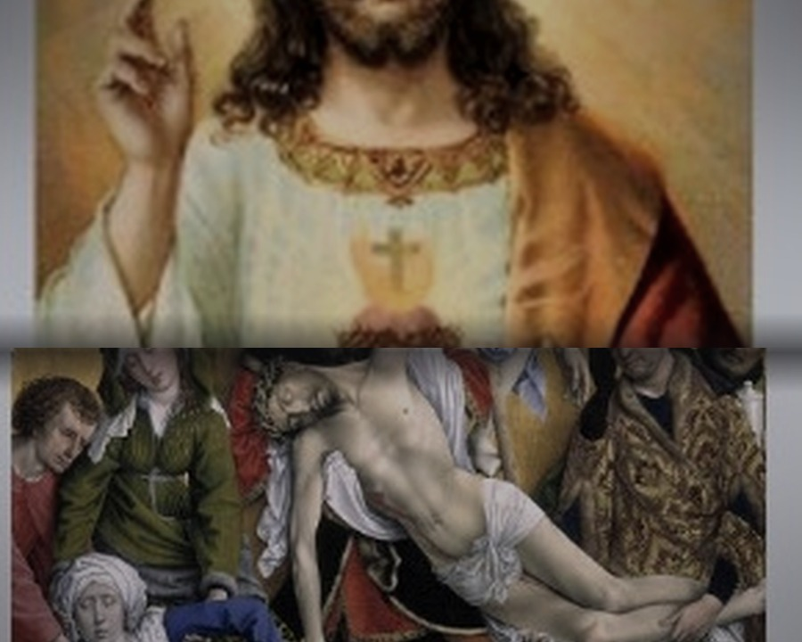
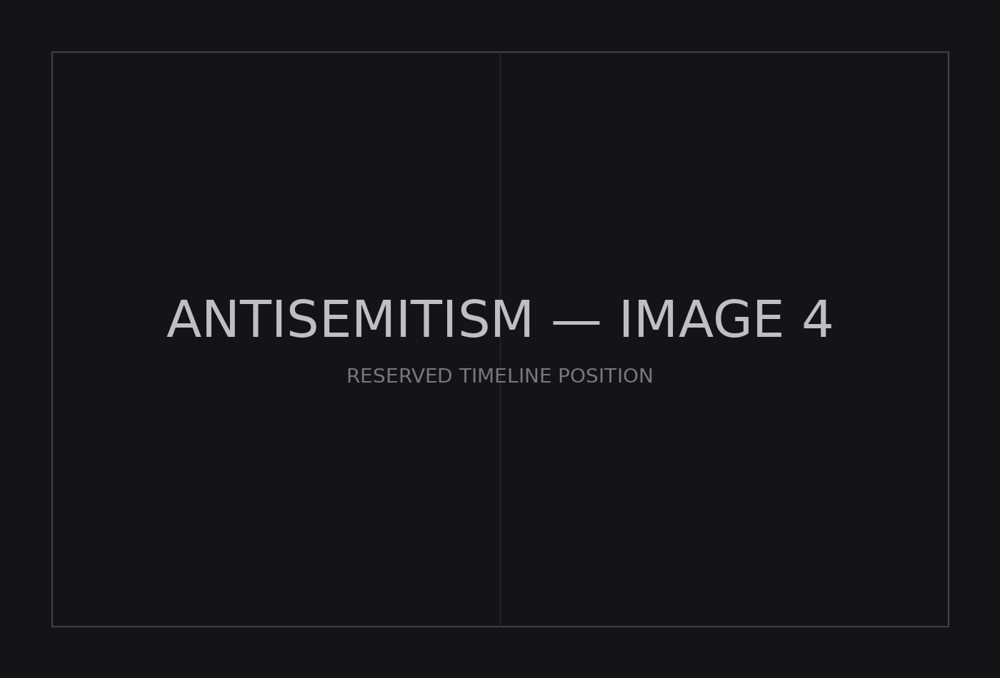

Jew-Hatred
Antijudaism

Antisemitism

Antizionism
The Three Eras of Jew-Hatred
Jew-hatred has occupied three eras. In the Christian world, the Jew was condemned as the enemy of God. In the age of race, he became the biological enemy of society. In the modern world, the object of condemnation is the Zionist who encapsulates colonialism, apartheid, genocide. These are the three eras of antijudaism, antisemitism, and antizionism: theological, racial, and human rights-coded expressions of an enduring hatred of Jews.
Antijudaism
Christian Europe placed the Jew within a sacred drama of betrayal and malevolence. Jews were blamed for the death of Christ, said to desecrate the Eucharist, poison wells, spread pestilence, murder Christian children, and consume their blood in secret rites. The blood libel endured for centuries because it made the Jew more than a theological dissenter. The Jew inhabited the medieval imagination as concealed, sacrilegious, and bloodthirsty. Unexplained death, disease, religious anxiety, and civic disorder could all be assigned to a Jewish conspiracy.
Antisemitism
The nineteenth century secularized this inheritance. Race, heredity, nationalism, economics, revolution, and pseudoscience supplied a modern explanation for Jewish evil. Jewishness became ineradicable. Baptism no longer offered escape, because the danger lay not in belief but in blood. The Jew could be financier and Bolshevik, cosmopolitan and separatist, revolutionary and reactionary, decadent and fanatical. The contradictions posed no difficulty. Antisemitism was capacious enough to make Jews responsible for whatever threatened order. The Protocols of the Elders of Zion gave this era its most enduring literary form. Forged in the Russian Empire, the text imagined modern history as the work of a hidden Jewish directorate manipulating finance, journalism, war, and government. Nazism carried racial antisemitism to its terminal conclusion. If Jewish existence constituted the danger, exclusion could never suffice. The Holocaust destroyed millions of Jews and rendered the explicit racial idiom of European antisemitism morally toxic.
Antizionism
The postwar world supplied another language. The empire was collapsing. National liberation movements were overturning colonial rule. Racism had become one of the defining evils of the postwar order. Apartheid stood for legalized racial domination. Genocide named humanity's ultimate crime. Within this, the Jew was recast as the Zionist. Jewish power became Zionist influence. Jewish conspiracy became the Zionist lobby. Jewish bloodlust became the deliberate killing of children. Jewish racial corruption became supremacy. Jewish national life became settler-colonialism. Jewish collective criminality became genocide. The older imagery no longer needed to announce itself as antisemitic. It could return under the language of anti-racism, decolonization, and human rights. The medieval Jew murdered the Christian child. The racial Jew corrupted the nation. The Zionist colonizes, segregates, and exterminates.